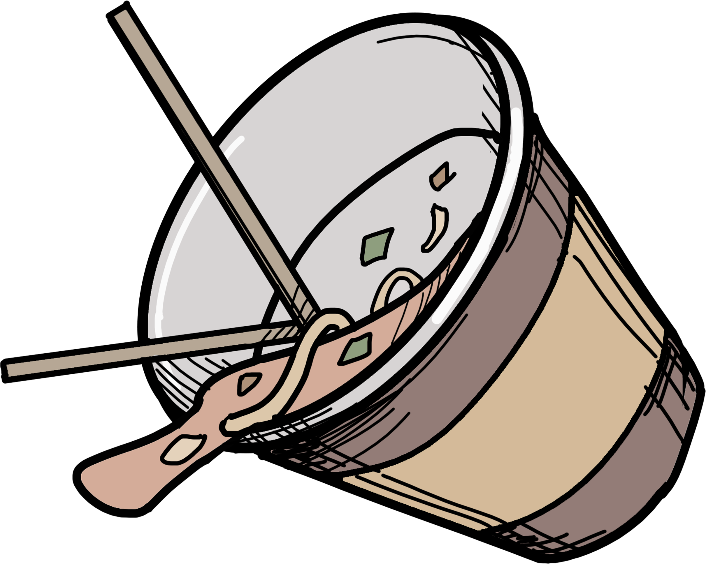
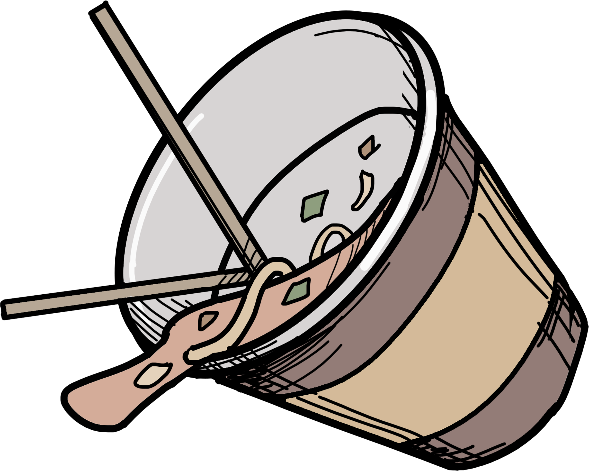

분리수거
가장 큰 문제 중 하나는 쓰레기가 분리수거가 안된 상태로 버려져있는 것이다. 많은 환경미화원분들이 매번 쓰레기들을 치울 때마다 대부분의 쓰레기가 분리수거가 이루어져 있지 않았지만, 분리수거를 당장 그 자리에서 하기에는 너무 오래걸리기에 쓰레기를 모은 다음 후에 다시 분리수거하는 과정을 거친다고 한다. 분리수거만 잘 이루어져도 환경미화가 훨씬 수월해질 것이라고 한다.
무단투기
또 다른 문제 중 하나는 무단투기이다. 축제가 벌어진 길거리 곳곳에 버려져 있는 쓰레기도 문제지만, 쓰레기통이 아닌 구석이나 전봇대 옆에 버리는 것도 문제이다. 인터뷰에 따르면 대부분의 사람들이 쓰레기가 모여있길래 쓰레기를 버리는 곳인줄 알았다는 식의 대답을 했다. 이러한 사람들의 무책임한 태도로 성숙한 시민의식이 절실하다는 지적이 있다.

시민의식만이 문제?
그렇다면 시민의식만이 문제일까? 완전한 답은 아닌 것 같다.
서울불꽃축제의 한 기사에서는 "음식물 쓰레기는 분리 배출 바랍니다"라고 적힌 입간판이 있었지만, 전체 높이가 사람 키와 엇비슷한 2m에 불과해 인파에 가려 안내문이 안 보이거나 입간판 자체가 사람에 밀려 땅에 넘어져 있기 일쑤였다고 한다.
일부 인터뷰에서는 쓰레기를 어디다 버리는지 확실한 명시가 안되있어 근처 쓰레기가 모아져있는데 버리게 됐다고 한다. 실제로 인파에 가려 쓰레기통이 어딨는지 모르는 사람들이 대부분이였고 쓰레기통의 갯수도 규모에 비해 상당히 적었다. 심지어 있는 쓰레기통도 대부분 꽉찬 상태여서 대부분 분리배출을 하기에는 힘든 상황이였다고 한다.
이러한 요소가 쓰레기를 제대로 버리지않는 사람들의 낮은 시민의식에 대한 변명이 될 수는 없지만, 그래도 사람들 탓만 하기에는 정책적으로 아직 부족한 점이 있는 것 같다. 시민의식의 개선과 축제 주최측의 쓰레기 관리를 위한 정책 등이 모두 개선되어야만 축제의 쓰레기 문제가 그나마 해소 될 것이라 생각된다.
쓰레기를 문제를 개선한 사례
쓰레기를 가져가는 매너(오모치카에리)
일본의 3대 불꽃놀이 축제 중 하나가 끝난 이바라키현 쓰치우라시에서는 축제가 끝나자 각자의 돗자리를 걷고 자기가 사용한 쓰레기의 부피를 줄여 비닐봉지에 담아 역까지 2.5㎞ 거리를 대부분 사람이 한 손에 쓰레기봉투를 든 채 걸어갔다. 쓰레기봉투를 꽉 묶어서 자기 가방에 집어넣은 사람도 적지 않았다. 그 뒤 역 근처 분리수거함에 버리거나 자기 가방에 넣은 채 전철에 탔다. 사람들은 자신의 쓰레기는 각자 가져가는게 ('오모치카에리')매너라고 답했다.
철저한 분리수거를 통한 개선
제10회 강릉커피축제에서 발생한 쓰레기는 일반 쓰레기 4t, 재활용 쓰레기 1t으로 지난해 15t과 비교하면 10t이 감소했다. 획기적으로 쓰레기를 줄인 방법으로는 쓰레기 분리수거 모니터링과 재활용 쓰레기를 분리하였고 강릉축제 참가들과 업체에게는 일회용품을 사용을 자제하길 권장하며 재활용시스템을 개선하여 많은 양의 쓰레기를 줄였다.
당신이 무심코 버린 쓰레기를 매일 치우는라 고생하시는 분들이 있습니다.
같이 치워주지는 못할지라도 간단히라도 고생하시는 분들의 노고를 덜게 만들어주세요.
http://www.ohmynews.com/NWS_Web/View/at_pg.aspx?CNTN_CD=A0002329282 (캠퍼스 낭만을 지켜주는 사람들)
http://news.jtbc.joins.com/article/article.aspx?news_id=NB11706961 (쓰레기 명시가 안되있다.)
http://www.seoul.co.kr/news/newsView.php?id=20161010010034 (불꽃놀이축제, 분리수거)
https://www.youtube.com/watch?v=lAhcUk5cEao (무단투기)
https://www.insight.co.kr/news/121552 (무단투기)
http://www.newsis.com/view/?id=NISX20170929_0000109629 (해결방안, 먹깨비)
http://news.chosun.com/site/data/html_dir/2018/10/08/2018100800254.html (쓰레기 무단투기, 오모치카에리)
https://www.yna.co.kr/view/AKR20181030129200062?input=old_yna (해결방안, 강릉 분리수거 모니터링)
.png)
.png)
.png) 

.png)
.png)
.png)